Everest
Everest
Everest Base Camp
Twelve days through Sherpa country to the foot of the Khumbu Icefall
44 routes with day-by-day stages, sleeping altitudes, permits and honest notes on what makes each one hard.
Everest
Twelve days through Sherpa country to the foot of the Khumbu Icefall
 Annapurna
Annapurna
Up the Modi Khola gorge into a ring of 7,000 and 8,000 m peaks
 Annapurna
Annapurna
Around the Annapurna range and over the 5,416 m Thorong La
 Manaslu
Manaslu
Around the world's eighth highest mountain by the 5,106 m Larkya La
 Langtang
Langtang
Up a glacial valley to Kyanjin Gompa, a day's drive north of Kathmandu
 Annapurna
Annapurna
A short loop through rhododendron forest to a famous sunrise ridge
 Annapurna
Annapurna
A narrow ridge walk to the foot of Machhapuchhre in five days
 Everest
Everest
A quieter valley than base camp, ending at glacial lakes and Gokyo Ri
 Mustang
Mustang
Twelve days across the high desert to the walled town of Lo Manthang
 Langtang
Langtang
A steep ridge climb from Dhunche to Shiva's lakes at 4,380 m
 Everest
Everest
The full circuit of Khumbu over the Kongma La, Cho La and Renjo La
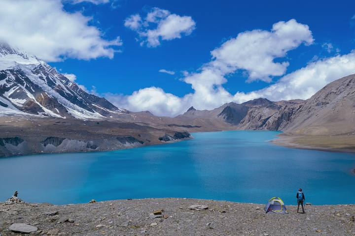
AnnapurnaA glacial lake at 4,919 m, then on over the Thorong La
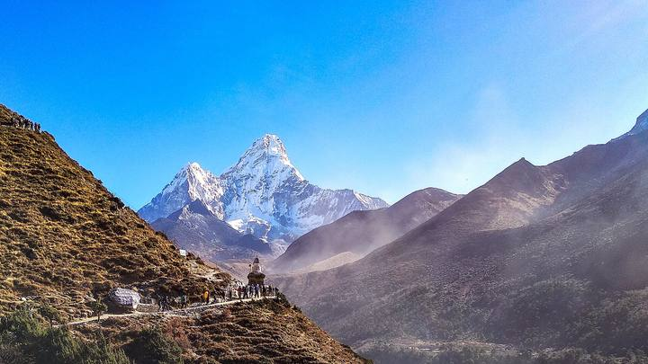
EverestUnder the west face of Ama Dablam, with every night below 4,000 m
 Langtang
Langtang
Three days to a sacred 3,771 m summit above Helambu's largest village
 Kathmandu Valley
Kathmandu Valley
Three days along the valley rim, from Shivapuri forest to a sunrise ridge
 Annapurna
Annapurna
A camping expedition over French Pass and Dhampus Pass behind Dhaulagiri
 Everest
Everest
Two valleys joined by a glacier pass: Gokyo Ri first, then base camp
 Everest
Everest
A week among Sherpa villages with Everest in view, never sleeping above 3,860 m
A short circuit of Gurung villages on both sides of the Modi Khola
 Langtang
Langtang
A ridge and village loop through Hyolmo country, starting at the city's edge
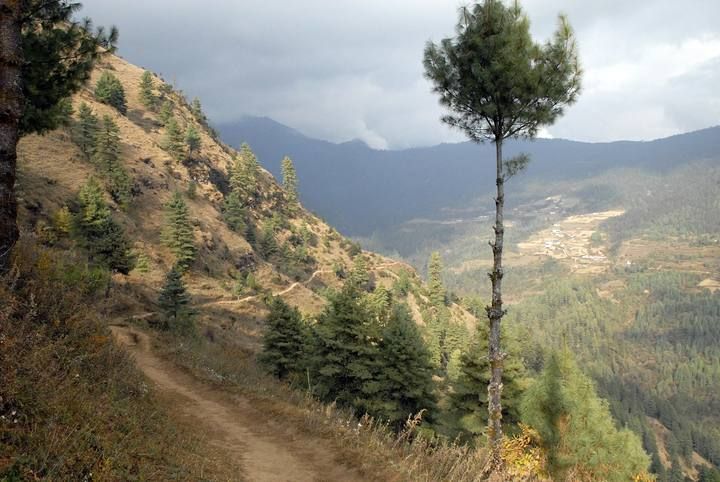
EverestThe old walk-in through Solu: three weeks on foot from the road to base camp
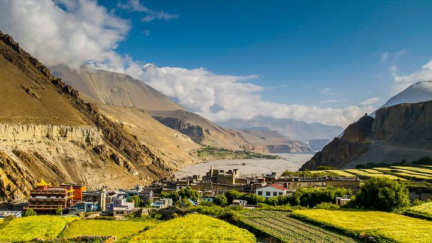
MustangPilgrim shrine, apple villages and the Kali Gandaki between two 8,000 m peaks
A short, steep climb from Charikot to a hilltop shrine at about 3,800 m
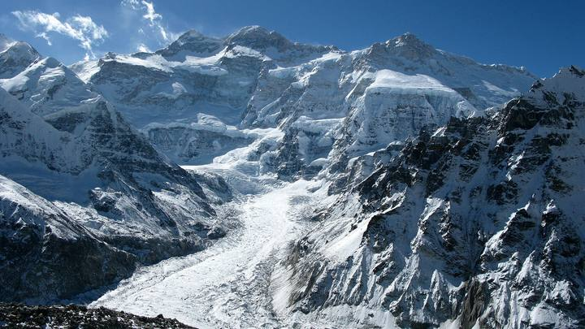
Eastern NepalBoth base camps of the third highest mountain, linked by a line of passes
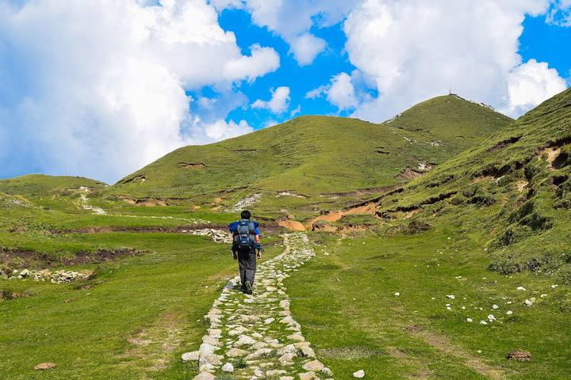
Western NepalHigh meadows, oak forest and a hermit's ashram in the far-western hills
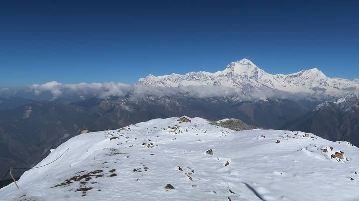
AnnapurnaCommunity lodges on a quiet ridge face to face with Dhaulagiri
A steep ridge trail to a grassy 3,245 m shoulder facing Machhapuchhre
 Langtang
Langtang
From the Langtang glaciers over a 4,610 m pass and back to Kathmandu on foot
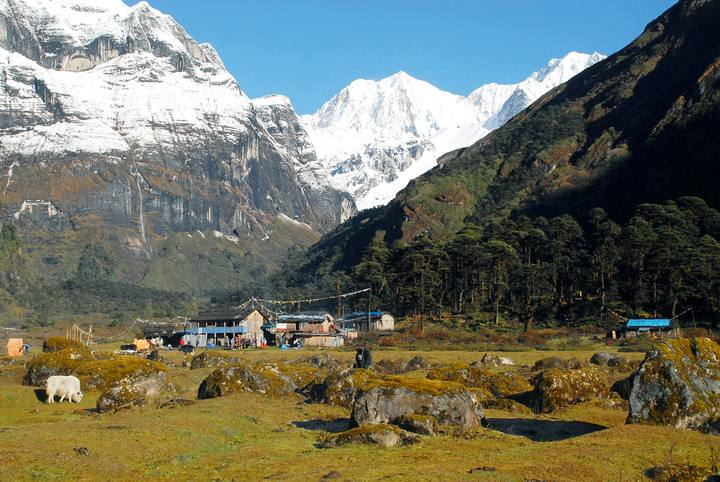
Eastern NepalFrom the hot Arun valley to the south face of the fifth highest mountain
 Annapurna
Annapurna
Village-run lodges on a quiet trail to a 3,300 m viewpoint
Hotel to hotel along the east rim, ending at a Buddhist pilgrimage hill
 Annapurna
Annapurna
Two stone villages of Tibetan origin and a 5,320 m pass north of Annapurna
A long forested ridge from Chautara to five sacred lakes at 4,100 m
A ridge walk round Phewa Lake to a quiet forested hilltop at 2,517 m
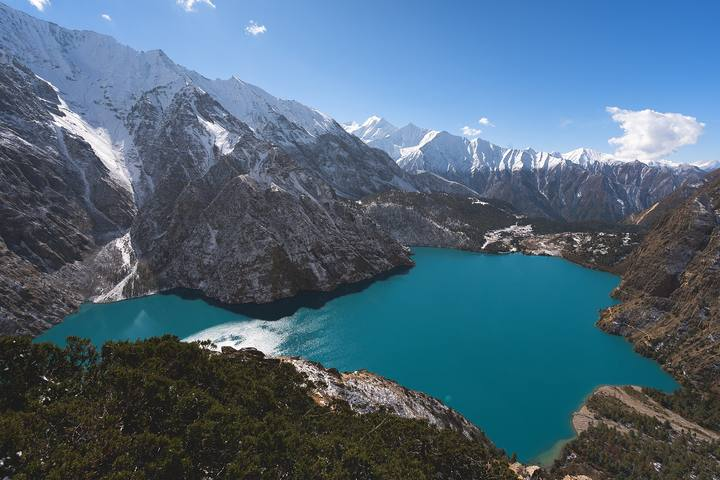
Western NepalA week in Dolpo to Nepal's deepest lake and the Bon village of Ringmo
 Everest
Everest
A week in lower Solu, climbing to a 4,065 m sunrise over the Everest range
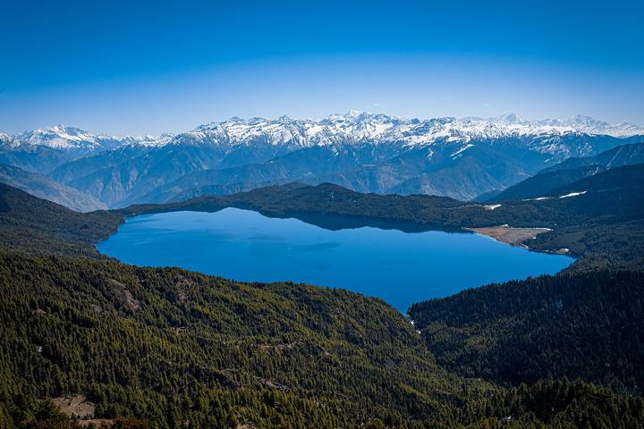
Western NepalA loop from Jumla through Sinja to Nepal's largest lake
Four easy days through hill villages east of Pokhara to Begnas Lake
Over the Pangsang pass from Gatlang to the homestay villages of Dhading
A big Gurung village above the Madi Khola, and the forest ridge behind it
 Langtang
Langtang
A village loop below the Tibetan border, with nights in Tamang homes
 Rolwaling
Rolwaling
A steep Sherpa valley under Gaurishankar, ending at a glacial lake at 4,580 m
 Manaslu
Manaslu
A Buddhist side valley of Manaslu, walked to the monastery at its head
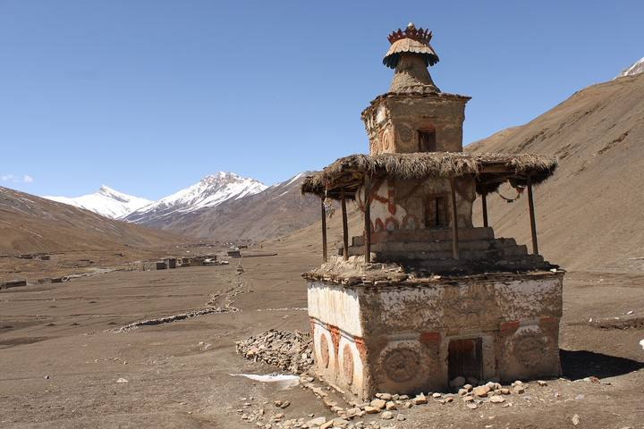
Western NepalPast Phoksundo and over the Kang La to Shey Gompa and the villages beyond
Try removing a filter, or widen the length or altitude range.